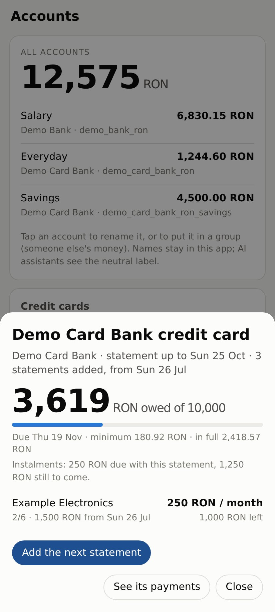

日常工具
Spendosaurus
规划家庭的大额开支，从初次估算到最后一期付款。
从你自己的银行账户、在你自己的服务器上，看清钱花到了哪里、每个月要付哪些钱。
Open Banking Hub 由你自行托管且只读：每个人运行自己的私人副本。

Open Banking Hub（简称 Bank Hub）是一个自行托管、只读的个人银行账户视图。它通过 Enable Banking 的 PSD2 API 获取你的交易，保存在你自己机器上的 SQLite 文件中，并很好地回答两个问题：我的钱花到哪里去了？我定期在付哪些钱？
它只读取账户数据，不包含任何能够发起付款的代码。适用于手机和笔记本电脑的私人应用会向你注册的设备显示全部内容，而只读的 MCP 服务器让 AI 助手基于脱敏视图回答问题：可以看到类别、金额和已知商家，但绝不会看到他人姓名、IBAN 或付款附言。
它基于 Revolut、ING Romania 和 BRD 开发和测试，Enable Banking 支持的任何银行都应该可以使用。Enable Banking 的受限生产模式对你自己的账户免费。Open Banking Hub 与 Enable Banking 或任何银行均无关联。
所有截图均为应用内置演示生成的虚构数据。在笔记本电脑上，应用会充分利用宽度：侧边栏、可以逐行查看的表格，以及在列表旁打开的付款或收款方。





Open Banking Hub 使用 Python 编写，基于 FastAPI 和 SQLite。它运行在一台始终开机的小型 Linux 机器上，可使用 Docker Compose 和已发布的 amd64 与 arm64 镜像，或使用 systemd 单元。你通过 Tailscale 等私有网络从手机访问它；它不应暴露在公共互联网上。外币金额按罗马尼亚国家银行的每日汇率换算。每晚的备份都会检查完整性，并可选择通过 restic 生成加密的异地副本。该项目以 MIT 许可证开源。